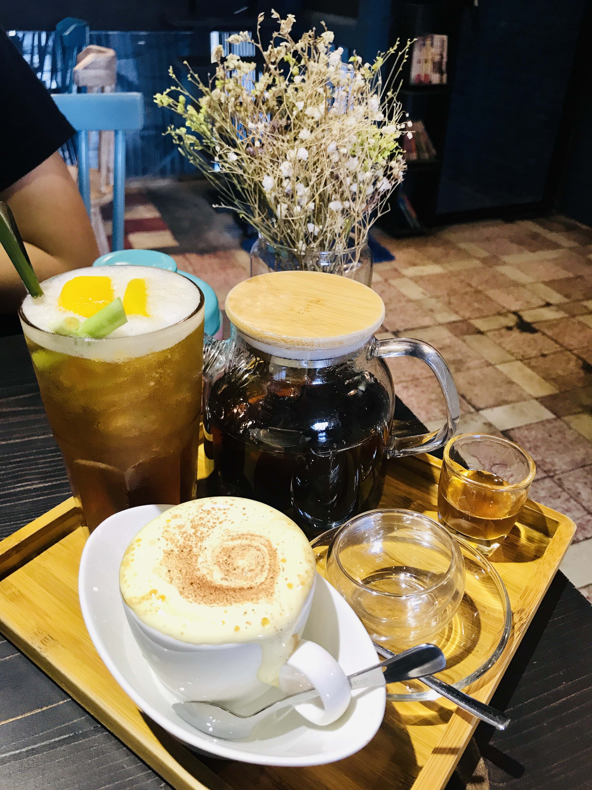
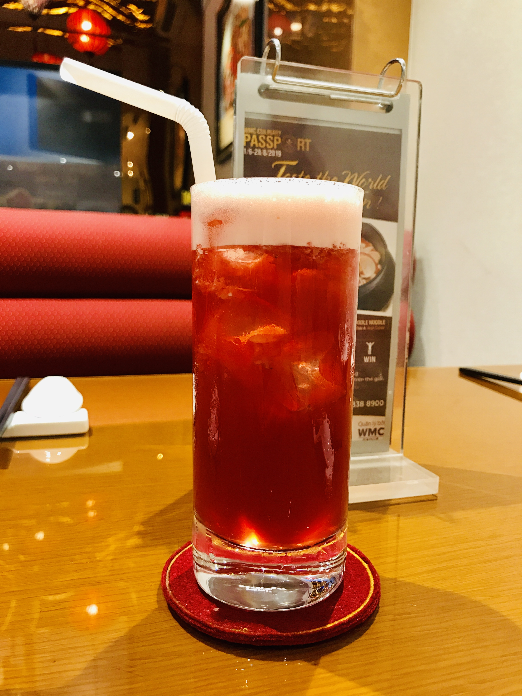
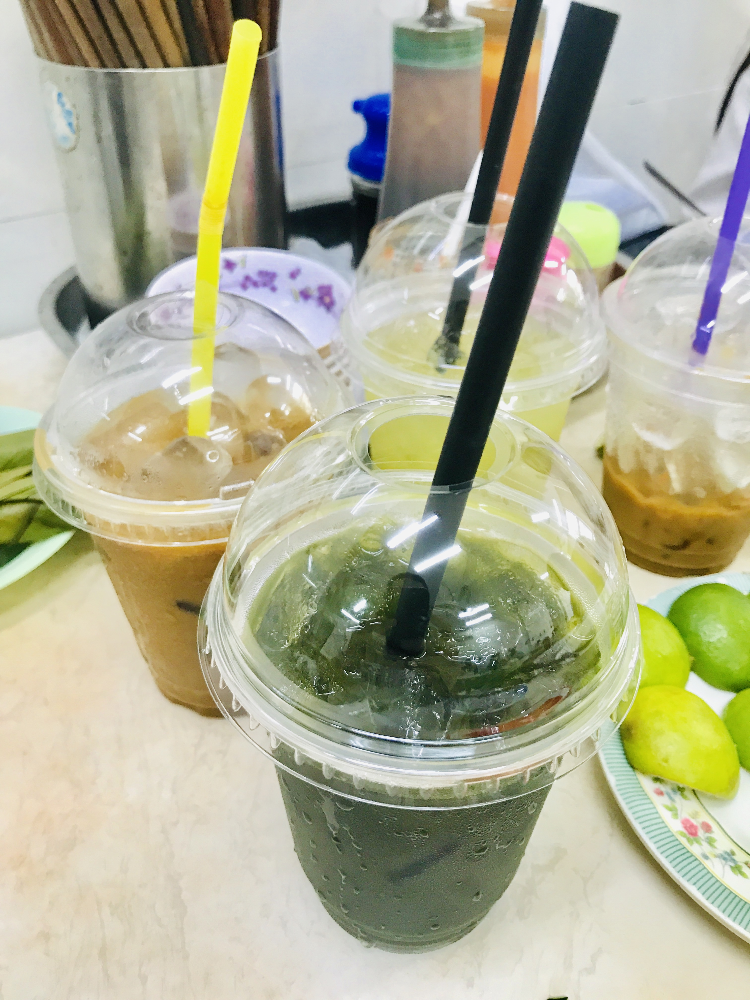
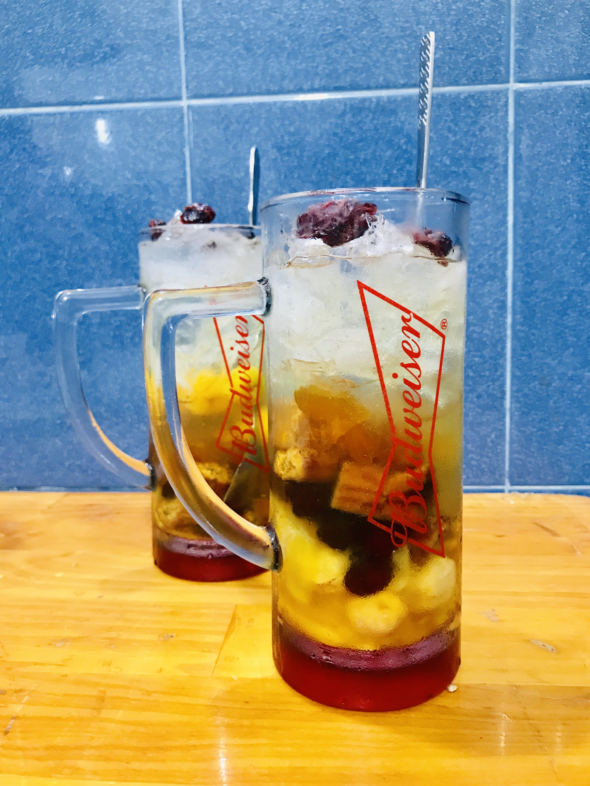

Vietnam's climate can be a bit sweltering especially during summer in the North and dry season in the South, so it's nice to get some refreshment along the way to cool you down. Ca phe sua da (iced coffee with condensed milk) is a well-known favourite of many people, both locals and tourists, but if you cannot take the caffeine punch of robusta, there are plenty other options to choose from: peach tea, lychee tea, Asiatic pennywort juice, hibiscus infusion, etc. Some possess medical properties. For example, the Asiatic pennywort juice is proven to quickly reduce blood pressure.